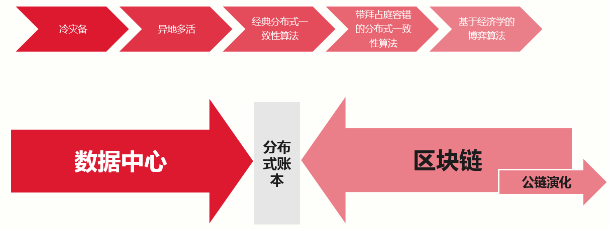
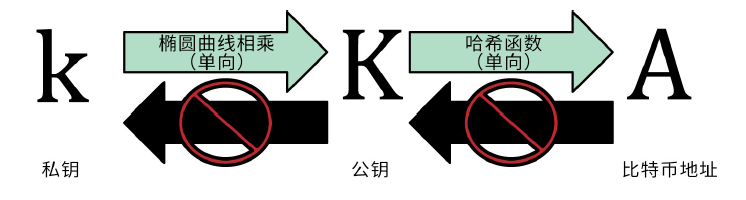

- 00 开篇词 帮你从0到1深入学习区块链技术.md.html
- 尾声篇 授人以鱼，不如授人以渔.md.html
- 新书首发《区块链第一课：深入浅出技术与应用》.md.html
- 第01讲 到底什么才是区块链？.md.html
- 第02讲 区块链到底是怎么运行的？.md.html
- 第03讲 浅说区块链共识机制.md.html
- 第04讲 区块链的应用类型.md.html
- 第05讲 如何理解数字货币？它与区块链又是什么样的关系？.md.html
- 第06讲 理解区块链之前，先上手体验一把数字货币.md.html
- 第07讲 区块链的常见误区.md.html
- 第08讲 最主流区块链项目有哪些？.md.html
- 第09讲 深入区块链技术（一）：技术基础.md.html
- 第10讲 深入区块链技术（二）：P2P网络.md.html
- 第11讲 深入区块链技术（三）：共识算法与分布式一致性算法.md.html
- 第12讲 深入区块链技术（四）：PoW共识.md.html
- 第13讲 深入区块链技术（五）：PoS共识机制.md.html
- 第14讲 深入区块链技术（六）：DPoS共识机制.md.html
- 第15讲 深入区块链技术（七）：哈希与加密算法.md.html
- 第16讲 深入区块链技术（八）： UTXO与普通账户模型.md.html
- 第17讲 去中心化与区块链交易性能.md.html
- 第18讲 智能合约与以太坊.md.html
- 第19讲 上手搭建一条自己的智能合约.md.html
- 第20讲 区块链项目详解：比特股BTS.md.html
- 第21讲 引人瞩目的区块链项目：EOS、IOTA、Cardano.md.html
- 第22讲 国内区块链项目技术一览.md.html
- 第23讲 联盟链和它的困境.md.html
- 第24讲 比特币专题（一）历史与货币.md.html
- 第25讲 比特币专题（二）：扩容之争、IFO与链上治理.md.html
- 第26讲 数字货币和数字资产.md.html
- 第27讲 弄懂数字货币交易平台（一）.md.html
- 第28讲 弄懂数字货币交易平台（二）.md.html
- 第29讲 互联网身份与区块链数字身份.md.html
- 第30讲 区块链即服务BaaS.md.html
- 第31讲 数字货币钱包服务.md.html
- 第32讲 区块链与供应链（一）.md.html
- 第33讲 区块链与供应链（二）.md.html
- 第34讲 从业区块链需要了解什么？.md.html
- 第35讲 搭建你的迷你区块链（设计篇 ）.md.html
- 第36讲 搭建你的迷你区块链（实践篇）.md.html
- 捐赠
第09讲 深入区块链技术（一）：技术基础
在“浅说区块链基础”的部分中，我概括介绍了区块链的入门知识以及区块链的应用领域，在“深入区块链技术”部分的第一篇中，我将带你一起总览下区块链的技术概要，本篇提到的所有技术内容，我们都会在后续文章中进行详细的讲解。
区块链的技术定义
简单来说，区块链是一个提供了拜占庭容错、并保证了最终一致性的分布式数据库；从数据结构上看，它是基于时间序列的链式数据块结构；从节点拓扑上看，它所有的节点互为冗余备份；从操作上看，它提供了基于密码学的公私钥管理体系来管理账户。
或许以上概念过于抽象，我来举个例子，你就好理解了。
你可以想象有100台计算机分布在世界各地，这100台机器之间的网络是广域网，并且，这100台机器的拥有者相不信任，那么，我们采用什么样的算法（共识机制）才能够为它提供一个可信任的环境，并且使得：
- 节点之间的数据交换过程不可篡改，并且已生成的历史记录不可被篡改；
- 每个节点的数据会同步到最新数据，并且会验证最新数据的有效性；
- 基于少数服从多数的原则，整体节点维护的数据本身可以客观反映交换历史。
通常我们在分布式系统领域也见到过上述的要求，比如第2条就阐述了分布式系统基本要求：一致性要求；基于少数服从多数原则是为了容忍网络分区；区块链就是解决上述问题的技术方案。
我们结合以往讲过的内容，和将要讲的内容，先提炼一下区块链在技术上的7个特征，你先记住，我们后续会慢慢道来：
- 区块链的存储基于分布式数据库；
- 数据库是区块链的数据载体，区块链是交易的业务逻辑载体；
- 区块链按时间序列化区块数据，整个网络有一个最终确定状态；
- 区块链只对添加有效，对其他操作无效；
- 交易基于非对称加密的公私钥验证；
- 区块链网络要求拜占庭将军容错；
- 共识算法能够“解决”双花问题。
区块链的类型
我们在讨论区块链时，通常指的是公有区块链。除此之外，还存在另外一种区块链：联盟链。
我们在前面的文章介绍过它。所谓联盟链，就是这个区块链具有准入许可，不像公链，任何人都可以随时进入。准入许可也就意味着候选节点进入区块链时需要得到已经在网络中的节点许可，所以联盟链也叫做许可链。
早期文章里可能还会涉及私有区块链的定义，其实我认为私有区块链更像是一个捏造的概念，如果是完全私有的分布式数据库，技术人员往往会有更好的选择。
如今云计算日趋成熟，大规模的分布式存储已经不是难题，不必在区块链这种低并发、低吞吐量的系统中折磨自己。
所以我们所说的区块链通常指的是公链。除了公链和联盟链的概念，还有一种区块链概念，叫作侧链。
侧链是一种双向挂钩技术，将主链中的代币锁定到侧链中使用。所以可以将主链看作主干道，侧链看作与主链相对独立的一条分支道，作为主链功能的低耦合拓展。
区块链的核心技术组成
无论是公链还是联盟链，至少需要四个模块组成：P2P网络协议、分布式一致性算法（共识机制）、加密签名算法、账户与存储模型。
1. P2P网络协议
P2P网络协议是所有区块链的最底层模块，负责交易数据的网络传输和广播、节点发现和维护。
通常我们所用的都是比特币P2P网络协议模块，它遵循一定的交互原则。比如：初次连接到其他节点会被要求按照握手协议来确认状态，在握手之后开始请求Peer节点的地址数据以及区块数据。
这套P2P交互协议也具有自己的指令集合，指令体现在在消息头（Message Header)的命令（command）域中，这些命令为上层提供了节点发现、节点获取、区块头获取、区块获取等功能。
这些功能都是非常底层、非常基础的功能。如果你想要深入了解，可以参考比特币开发者指南中的Peer Discovery的章节。
2. 分布式一致性算法
在经典分布式计算领域，我们有Raft和Paxos算法家族代表的非拜占庭容错算法，以及具有拜占庭容错特性的PBFT共识算法。
如果从技术演化的角度来看，我们可以得出一个图，其中，区块链技术把原来的分布式算法进行了经济学上的拓展。
 （图片来自网络）
在图中我们可以看到，计算机应用在最开始多为单点应用，高可用方便采用的是冷灾备，后来发展到异地多活，这些异地多活可能采用的是负载均衡和路由技术，随着分布式系统技术的发展，我们过渡到了Paxos和Raft为主的分布式系统。
而在区块链领域，多采用PoW工作量证明算法、PoS权益证明算法，以及DPoS代理权益证明算法，以上三种是业界主流的共识算法，这些算法与经典分布式一致性算法不同的是融入了经济学博弈的概念，下面我分别简单介绍这三种共识算法。
PoW：通常是指在给定的约束下，求解一个特定难度的数学问题，谁解的速度快，谁就能获得记账权（出块）权利。这个求解过程往往会转换成计算问题，所以在比拼速度的情况下，也就变成了谁的计算方法更优，以及谁的设备性能更好。比特币本身的演化很好地诠释了这个问题，中本聪设计的思路本来是由CPU计算。随着市场发展，人们发现GPU也可以参与其中，而且效率可以达到十倍百倍，现在，这项工作基本以ASIC专业挖矿芯片为主。
PoS：这是一种股权证明机制，它的基本概念是产生区块的难度应该与你在网络里所占的股权（所有权占比）成比例，目前有三个版本PoS1.0、PoS2.0、PoS3.0。它实现的核心思路是：使用你所锁定代币的币龄（CoinAge）以及一个小的工作量证明，去计算一个目标值，当满足目标值时，你将可能获取记账权。
DPoS：简单来理解就是将PoS共识算法中的记账者转换为指定节点数组成的小圈子，而不是所有人都可以参与记账，这个圈子可能是21个节点，也有可能是101个节点。这一点取决于设计，只有这个圈子中的节点才能获得记账权。这将极大地提高系统的吞吐量，因为更少的节点也就意味着网络和节点的可控。
3.加密签名算法
由于我不是密码学专业出身，所以这里我将会以介绍为主。
在区块链领域，哈希算法是应用得最多的算法。哈希算法具有抗碰撞性、原像不可逆、难题友好性等特征。
其中，难题友好性正是众多PoW币种赖以存在的基础，在比特币中，SHA256算法被用作工作量证明的计算方法，也就是我们所说的挖矿算法。
而在莱特币身上，我们也会看到Scrypt算法，该算法与SHA256不同的是，需要大内存支持。
而在其他一些币种身上，我们也能看到基于SHA3算法的挖矿算法。以太坊使用了Dagger-Hashimoto算法的改良版本，并命名为Ethash，这是一个IO难解性的算法。
当然，除了挖矿算法，我们还会使用到RIPEMD160算法，主要用于生成地址，众多的比特币衍生代码中，绝大部分都采用了比特币的地址设计。
除了地址，我们还会使用到最核心的，也是区块链Token系统的基石：公私钥密码算法。
在比特币大类的代码中，基本上使用的都是ECDSA。ECDSA是ECC与DSA的结合，整个签名过程与DSA类似，所不一样的是签名中采取的算法为ECC（椭圆曲线函数）。
从技术上看，我们先从生成私钥开始，其次从私钥生成公钥，最后从公钥生成地址，以上每一步都是不可逆过程，也就是说无法从地址推导出公钥，从公钥推导到私钥。

（图来自《精通比特币》一书）
4. 账户与交易模型
从一开始的定义我们知道，仅从技术角度可以认为区块链是一种分布式数据库，那么，多数区块链到底使用了什么类型的数据库呢？
我在设计元界区块链时，参考了多种数据库，有NoSQL的BerkelyDB、LevelDB，也有一些币种采用基于SQL的SQLite。
这些作为底层的存储设施，多以轻量级嵌入式数据库为主，由于并不涉及区块链的账本特性，这些存储技术与其他场合下的使用并没有什么不同。
区块链的账本特性，通常分为UTXO结构以及基于Account-Balance结构的账本结构，我们也称为账本模型。UTXO是“unspent transaction input/output”的缩写，翻译过来就是指“未花费的交易输入输出”。
这个区块链中Token转移的一种记账模式，每次转移均以输入输出的形式出现。而在Balance结构中，是没有这个模式的。
总结
今天我介绍了区块链的技术概念、分类以及核心技术组成，相信你对区块链技术有了一个初步的了解。
区块链虽然是一个新兴的概念，但它依赖的技术一点也不新，如非对称加密技术、P2P网络协议等。好比乐高积木，积木块是有限的，但是不同组合却能产生非常革新的事物。
所以区块链也成了一个新的领域，基本上现有的很多概念，都能被“区块链化”，那么你能否在自己的领域，想到“区块链化”哪些概念呢？你可以给我留言，我们一起讨论。
感谢你的收听，我们下期再见。
参考链接：
© 2019 - 2023 Liangliang Lee. Powered by gin and hexo-theme-book.